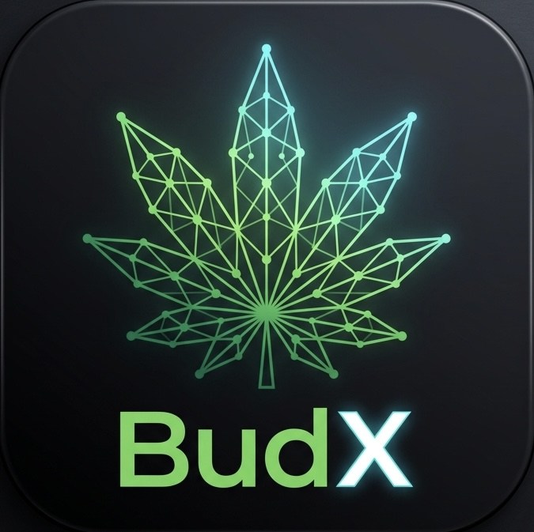

BudX is a mobile app built to give plant growers complete, real-time control over their garden environments. Whether you’re dialing in daily climate schedules, tracking complex feeding regimens, or monitoring growth cycles from seed to harvest, BudX brings all your cultivation data into one clean interface.
Track environmental metrics, set automated alerts, log journal entries, and optimize yields—all from your smartphone.
Download on the App StoreNeed help dialing in your environment or navigating the app? Check our common questions below or reach out directly.
Navigate to the 'Environment' tab, select your current grow space, and tap the bell icon in the top right. From there, you can set custom thresholds for temperature and humidity drift.
Yes. Go to your 'Journal Entries' screen, select a completed harvest cycle, and tap 'Export Data' to generate a full report of your feeding and climate history.
Required Data Deletion: If you wish to permanently delete your BudX account and all associated cultivation data/telemetry, please email us directly at support@budx.info from the email address associated with your account. We will process your complete data erasure within 7 business days.
Effective Date: January 1, 2026
BudX collects essential account information (such as your email address) to maintain your profile. We also collect the cultivation data you input into the app, including climate schedules, feeding regimens, and journal entries, to provide you with historical tracking and analytics.
Your data is used strictly to power the BudX app experience. We use your telemetry and log data to generate your personalized charts, trigger your automated alerts, and help you optimize your yields. We do not sell your personal data or garden metrics to third parties.
We implement industry-standard security measures to ensure your cultivation logs and personal information are stored safely and securely. All telemetry sent between the app and our servers is encrypted.
You have the right to access, modify, or delete your personal information at any time. To request a full deletion of your account and all associated garden data, please contact us at support@budx.info.